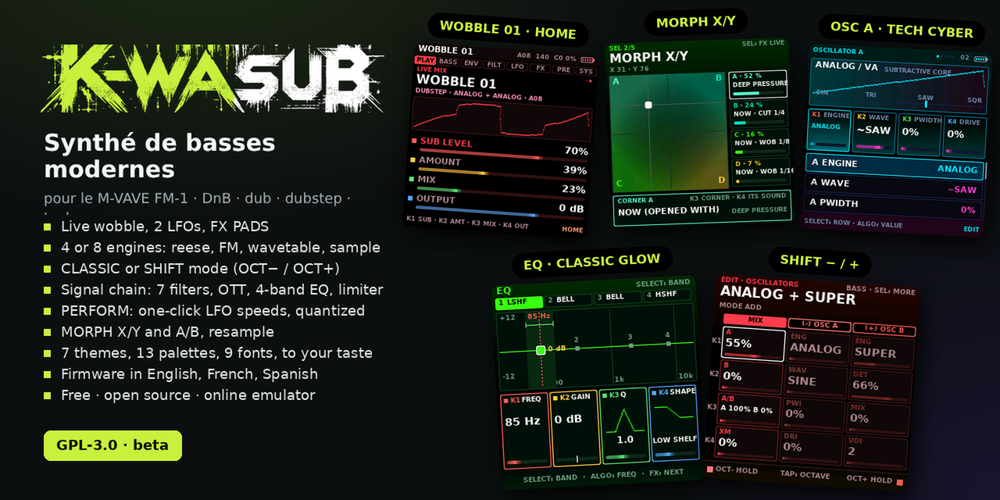
Fais de ton FM-1 un synthé de basses moderne
K-WASUB est un firmware gratuit pour le M-VAVE FM-1. Il sert à fabriquer et jouer des basses de DnB, dub, dubstep et techno : reese qui grognent, subs profonds, 808, et surtout un wobble que tu modules en direct avec les potards et les touches.
À quoi ça sert ?
Jouer une basse vivante
Les 27 touches jouent la basse, K1–K4 règlent les 4 réglages importants de chaque page. Un appui long sur LFO et un potard : le LFO 2 est branché sur ce que tu règles (ou le LFO 1, dans les options).
Des effets sur les touches
FX PADS : touches blanches = vitesse du wobble (4, 8, 16, 24, 32, 48), touches noires = stutters, tape stop, DJ filter, saturation, phaser…
Un vrai son de basse
2 oscillateurs de 4 ou 8 moteurs (reese, FM, wavetable…, au choix dans les options), un sub verrouillé sur A, un sample et le resample, 7 filtres, OTT multibande, mono-bass, compresseur avec pump, EQ 4 bandes, limiteur et niveau automatique.
Morpher entre des sons
MORPH X/Y : quatre sons aux coins d'un carré, un point qui les mélange (un LFO peut le promener). MORPH A/B : un fondu sur le tempo.
Séquenceurs avec parameter locks
SEQ BASS et un séquenceur de batterie DRUMS (808, 909, dub techno, acoustique) : jusqu’à 64 pas, chance et conditions sur chaque pas, et parameter locks : maintenir un pas et tourner un potard lui donne son propre accord, decay, timbre, niveau, ratchet (2 à 4 coups) ou écho dub ; sur la basse, son propre cutoff, résonance, enveloppe de filtre, drive, vitesse de wobble, forme ou début de sample. Automation : maintenir REC pendant la lecture et tourner n’importe quel potard, c’est enregistré pas à pas ; REC maintenu seul l’efface.
Synchronisé
Horloge MIDI en entrée et en sortie, et une sortie sync pour Pocket Operator et Volca (une impulsion par croche à gauche). REC en direct de la basse et de la batterie, OCT− / OCT+ pour tourner les pages de 16 pas.
Simple ou rapide
Mode CLASSIC (listes) ou SHIFT (3 colonnes, OCT− et OCT+ comme touches Shift). 7 thèmes (dont CLASSIC GLOW, TECH et RIBBON, en dégradés), 13 palettes + leurs versions dégradé RAD, 4 luminosités, grand contraste.
Sûr et ouvert
Gratuit, libre (GPL-3.0), se réinstalle ou se retire en USB, avec un mode de secours. Si le FM-1 s'arrête, l'écran dit pourquoi.
Essayer dans le navigateur
Le même firmware, compilé pour ton navigateur : aucun FM-1 nécessaire. Clique sur l'écran puis joue avec le clavier de l'ordinateur (touches A Z E R T…), la souris sur les boutons, la molette sur les potards. Le son démarre au premier appui.
Lance l'émulateur ici, sans rien installer
Il pèse moins d'1 Mo et fonctionne même hors ligne (ouvre emulator/index.html depuis ton dossier).
Installer sur le FM-1
1Branche
Le FM-1 en USB à l'ordinateur, avec un câble de données (pas un câble de charge). Ferme les autres logiciels MIDI.
2Ouvre l'installateur
Dans Chrome ou Edge : installer.html. Clique « Installer K-WASUB » et confirme. Rien à débrancher avant la fin.
3Joue
Au redémarrage, l'écran de démarrage s'affiche. Appuie sur un bouton. Les manuels expliquent la suite en 3 minutes.
Sans Chrome ni Edge : INSTALL-Windows.bat, INSTALL-Mac.command ou INSTALL-Linux.sh (Python 3). Retour à KAWA ou à l'officiel possible à tout moment ; maintenir OCT− à l'allumage ouvre le mode de secours USB.
Un aperçu
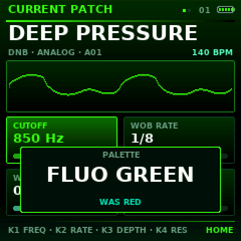
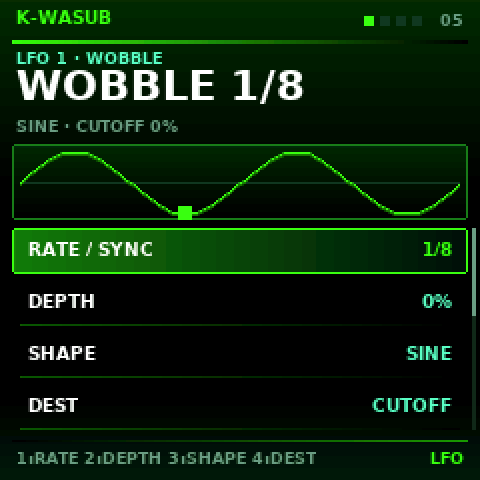
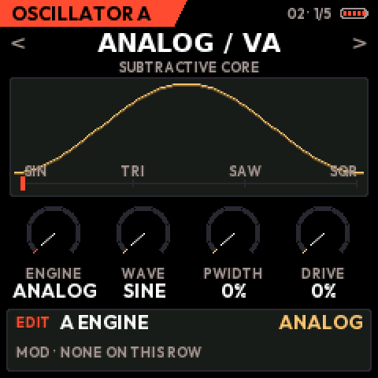
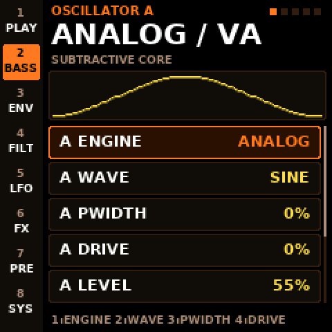
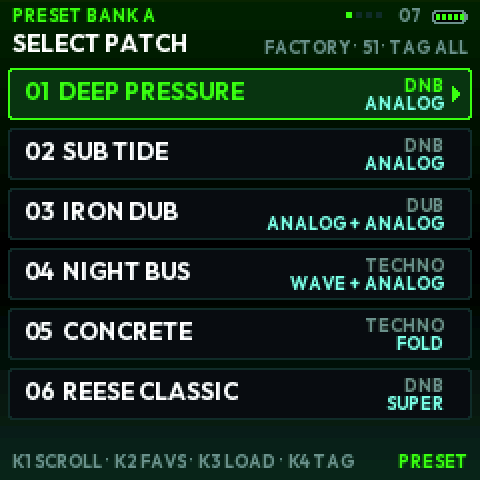
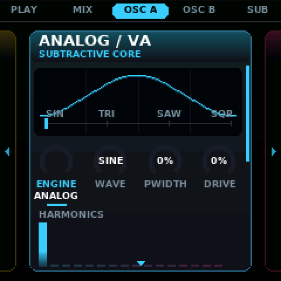
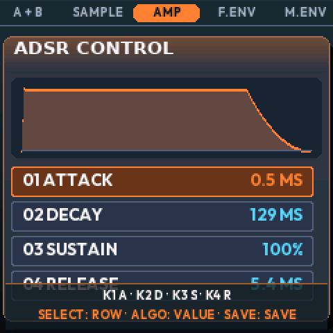
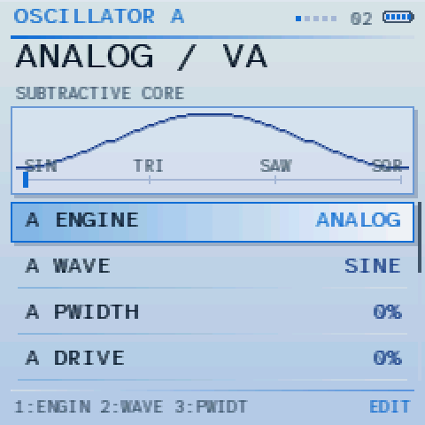
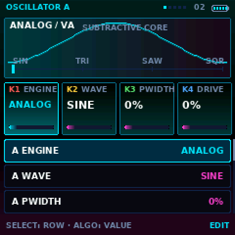
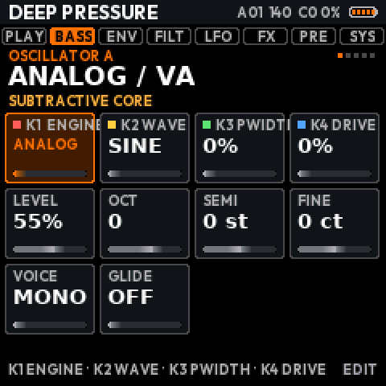
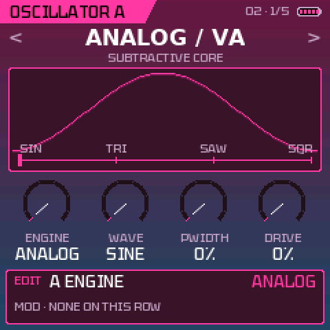
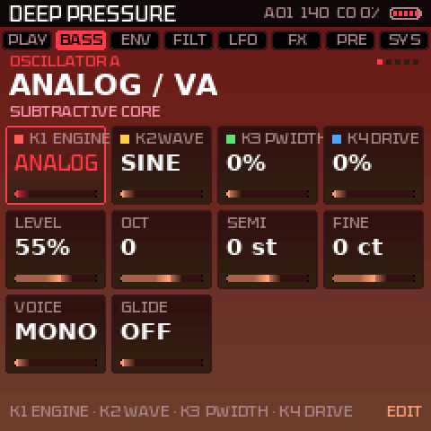
Dernières mises à jour
- 1.0.12
- SEQ BASS : un réglage SEQUENCE ON / OFF tout en haut de la liste ; OFF, la séquence de basse reste muette pendant que la batterie tourne, et les touches jouent la basse en direct (elles ne transposent plus la séquence, l’arpégiateur marche). Il est sauvegardé avec la batterie
- 1.0.11
- DRUMS : les touches blanches du FM-1 restent allumées là où l’instrument choisi joue sur la page affichée (grosse caisse, caisse claire, charleys…), un repère visible sur le clavier ; il suit l’instrument choisi et OCT− / OCT+
- 1.0.10
- SAVE : les touches noires du clavier dessiné n’ont plus de contour, leurs lettres se lisent mieux
- 1.0.9
- SAVE : le clavier de lettres est dessiné à l’écran, comme les touches (noires A à K en haut, blanches L à Z et une espace en bas) ; les touches enfoncées s’allument
Versions précédentes (59)
- 1.0.8DRUMS : billes ombrées (sans reflet) avec un épais contour noir, toutes de la couleur d’accent du thème ; la piste choisie a une bille plus grosse · Image promo : la tuile DRUMS est maintenant la vue plein écran STUDIO GOLD
- 1.0.7Nommer un son : sur l’écran SAVE, les touches forment un clavier de lettres — noires A B C · D E · F G H · I J · K, blanches L à Z puis une espace ; chaque touche écrit sa lettre et avance (K2 la place, K3 chiffres et signes)
- 1.0.6DRUMS : retour à des ronds simples avec un contour noir, et leurs couleurs suivent la palette : deux teintes voisines de son accent, en alternance (vert et jaune, violet et rose, rouge et orange…) · Image promo : la tuile DRUMS en RIBBON CLASSIC (nommée DRUMS · RIBBON GOLD)
- 1.0.5DRUMS en 3D : chaque pas est une bille éclairée (lumière en haut à gauche, bord dans l’ombre, reflet), une lueur douce sous les pas joués, plus grosse et plus claire sur un accent ; les pas vides sont de petites alvéoles ; nouvelles couleurs (corail, menthe, rose, or, ambre, azur, violet, glace) · Images du manuel et du promo refaites
- 1.0.4DRUMS, un look moderne : chaque pas est un point rond, un accent a un halo, un pas vide un petit point terne (plus gros sur le temps), un point creux marque une chance ou une condition, une étincelle blanche un parameter lock, une colonne claire le pas joué ; la piste choisie a un point plus gros et une teinte · Images du manuel et du promo refaites
- 1.0.3Nouveaux réglages par défaut, sur le FM-1 et dans l’émulateur : thème CLASSIC GLOW, palette FLUO GREEN, police TEKTUR, LOUPE active · Un FM-1 ou un émulateur qui a déjà des réglages les reçoit une fois à cette mise à jour ; SYSTEM change chacun comme avant
- 1.0.2DRUMS : OCT− maintenu + une touche noire 1–8 coupe cet instrument (ou le remet) sans le choisir ; les pistes coupées passent en gris
- 1.0.19 nouveaux presets : 808 BOOMER, 808 DIST, 808 KNOCK, ACID SQUELCH, ACID SQUARE, ACID FM ZAP, PURE SUB, WARM TRI SUB, FM SUB GROWL · Tous les sons d’usine utilisent maintenant les quatre moteurs ESSENTIAL (ANALOG, SUPER, WAVE, FM) : CONCRETE, YOI TALKER, NEURO GROWL, PHASE HORN, SYNC RIPPER, TEAROUT, NEURO STAB, MINIMAL CLICK et YOI RIDDIM refaits ; leurs volumes égalisés · L’écran de mise à jour du FM-1 affiche un texte et une barre au lieu de l’image, qui ne s’affichait pas pendant l’installation
- 1.0Version 1.0 : K-WASUB sort de la bêta, avec le séquenceur de batterie (4 kits, conditions), les parameter locks, les automations, la synchro PO / Volca, les samples d’OSC C et une bibliothèque de basses et de rythmes · L’écran de démarrage affiche V1.0 · Identité du paquet FM-1_980 (l’installateur et la mise à jour marchent comme avant)
- 0.9.59Automation : pendant la lecture, maintenir REC et tourner les potards voulus (n’importe quel réglage du son, n’importe quelle page) : enregistré pas à pas sur SEQ BASS, rejoué à chaque tour, les valeurs du son reviennent au STOP · Effacer : maintenir REC à nouveau sans rien toucher, les pas traversés sont effacés (ERASING AUTOMATION…, puis AUTOMATION ERASED) · Une ligne violette marque les pas automatisés ; REC maintenu à l’arrêt reste PANIC
- 0.9.58Le potard PRESETS fait maintenant défiler les vues sur EDIT, ENV, SEQ, LFO, FX et GLO (dans les deux sens, en boucle), et passe d’une fenêtre SEL à l’autre ; sur HOME et PRESETS il change toujours de son
- 0.9.57Parameter locks sur la batterie : maintenir un pas (touche blanche) et tourner K1–K4 pour ses propres LEVEL, TUNE, DECAY, TONE, ALGO pour un RATCHET (2 à 4 coups), SELECT pour son ECHO dub ; un coin blanc le marque · Parameter locks sur SEQ BASS : lignes P-LOCK et LOCK VALUE (CUTOFF, RESO, FILT ENV, DRIVE, WOB RATE, A SHAPE, SAMPLE START), un coin cyan le marque · REC pendant la lecture reste actif dans toutes les vues et enregistre les potards en verrous · Les sauvegardes 0.9.53–0.9.56 se rechargent toujours
- 0.9.56Sortie sync pour Pocket Operator et Volca (SYSTEM › MIDI › SYNC OUT) : une impulsion par croche à gauche, le son en mono à droite · Audio USB : une mémoire tampon plus grande, l’enregistrement du FM-1 sur ordinateur ne craque plus quand le son est chargé · Police OUTFIT et LOUPE par défaut · DRUMS, SEQ BASS et OSC C affichent leur pattern ou sample en grand dans tous les thèmes ; BLACK / WHITE dessine la batterie en nuances de blanc · Le manuel a un chapitre SEQ BASS et DRUMS
- 0.9.55OSC C : 12 nouveaux samples : attaques PICK, MALLET, CHIFF, HAMMER, ZAP, SLAP, CLICK, SCRATCH et textures SHIMMER, DARK PAD, BUBBLES, MACHINE · START / END (K3 / K4) coupent le début et la fin du sample, visibles sur son image · SPEED aussi plus rapide (jusqu’à 400 %, tourner à gauche), à hauteur égale · DIR : FORWARD, REVERSE ou PING-PONG · Les MIDI LEARN sont gardés (passés aux nouveaux identifiants)
- 0.9.54DRUMS : deux nouveaux kits (KIT) : DUB TECHNO (kick profond et doux, charleys bruités, accord mineur sur PERC, son propre écho dub sombre sur caisse claire, clap, toms, accord et charley ouvert) et ACOUSTIC (kick à batte, caisse claire à timbre, toms avec harmonique, conga, charleys plus brillants, ride) · 4 nouveaux presets de rythme : DUB TECHNO, ROCK, FUNK, JAZZ RIDE (breaks aux toms avec ACOUSTIC) · Charleys et cymbales de tous les kits bien plus forts (on les entendait à peine)
- 0.9.53DRUMS (SEQ, 4e vue) : kits 808 / 909, 8 pistes colorées ; touches noires = instrument, blanches = pas, OCT−/OCT+ = page ; chance et conditions par pas ; 14 presets de rythme (techno, dub, dnb…) en 16 / 32 / 64 pas · SEQ BASS : une durée de note par pas (jusqu’à 64 pas ou HOLD), 30 presets (notes continues, drone…) en 16 / 32 / 64 pas · REC en direct pendant la lecture, basse et batterie · Potards en FAST / ULTRA : pas à l’unité en tournant doucement
- 0.9.52AUDIO CORES retiré : K-WASUB tourne maintenant sur un seul cœur (le second cœur causait des plantages pour certains) ; SYSTEM ne propose plus le choix
- 0.9.51L'écran de mise à jour affiche maintenant l'image de l'écran de démarrage avec une barre de chargement arrondie à la place du nom du patch et de « press any button »
- 0.9.50L'écran de démarrage affiche BETA 0.9 en petit, en bas à droite
- 0.9.49OSC C (SAMPLE) : le niveau monte deux fois plus fort, le sample s'entend par-dessus le reste
- 0.9.48AUDIO CORES : les deux cœurs ne repassent plus définitivement à un seul après une extinction ou quand le cœur 1 est trop lent une fois ; SYSTEM et l'écran de démarrage disent pourquoi le cœur 1 ne tourne pas
- 0.9.47SEQ BASS : patterns jusqu'à 64 pas (LENGTH 32, 64), une PROBABILITY (%) et une TRIG CONDITION sur chaque pas : 1/2, 2/2, 1/4…4/4, START, NOT START, IF BEFORE, IF AFTER
- 0.9.46LANGUAGE (SYSTEM, anglais par défaut) : English, Français ou Español traduisent les titres de vue en haut de chaque écran · un README en espagnol (
es/README.md) - 0.9.45FX PADS : QUANTISATION sur ALGO (OFF, 1 BAR, 1/2, 1/4, 1/8, 1/16, 1/24, 1/32, 1/64) : une touche attend la prochaine division, les changements de wobble tombent en rythme · les potards : K1 CUTOFF, K2 RÉSONANCE, K3 TYPE DE FILTRE, K4 MORPH A/B
- 0.9.44A/B MIX en destination (LFO, matrice, assignation rapide) · LFO maintenu : LFO 2 sur les potards ; avec OCT− maintenu aussi, dans n'importe quel ordre : LFO 1 (par défaut sur le cutoff) · HOME maintenu : A + B, les deux oscillateurs ensemble · REC maintenu : PANIC
- 0.9.43EMBER plus clair ; EMBER et ICE NEON (les palettes de RIBBON) gardent maintenant leur fond bleu nuit plus clair (DEEP BLACK ne les remet plus au noir)
- 0.9.42Palettes retouchées : ICE NEON plus clair · SYNTHWAVE un rose clair en bas · FLUO une lueur jaune en haut · PINK synthwave (contours rose fluo, intérieur rose pâle plus foncé, du bleu autour) · SKY gris bleuté, second bleu marine · RAD : ICE NEON (bleu cyan vers bleu-vert foncé pâle), SYNTHWAVE (plus clair en haut, plus foncé en bas), BLACK / WHITE (foncé en haut, plus clair en bas), INVERTED (le dégradé dehors, cases gris clair unies, texte noir)
- 0.9.41KNOB ACCEL : OFF, ON, FAST et maintenant ULTRA : un potard tourné plus d'une seconde va de plus en plus vite (jusqu'à 4 fois FAST)
- 0.9.40RIBBON et RIBBON CLASSIC : un bandeau transparent en bas dit ce que font les potards, puis les boutons (4 s à chaque nouvelle vue ; toujours sur PRESETS et SAVE : comment charger, comment sauvegarder)
- 0.9.39RIBBON CLASSIC : la fenêtre sur toute la page, plus de flèches sur les côtés, plus de glissement · RACK : la barre de gauche arrondie, une encoche entre deux pages
- 0.9.38SKY RAD inversé : blanc cassé légèrement bleuté en haut, le bleu en bas · RACK plus arrondi : la page choisie et les lignes
- 0.9.37Chaque session démarre à l'octave −1
- 0.9.36Polices MONO et HYPER tout en majuscules (avec elles les unités s'écrivent HZ, MS, DB) · 13 Ko de place en plus : environ 99 Ko libres
- 0.9.35Plus de place : les polices et l'image de départ compressées (75 Ko libérés), rien ne change à l'écran
- 0.9.34Nouveau thème RIBBON : les vues côte à côte, chacune une longue fenêtre pleine de graphismes qui défile vers le bas · RIBBON CLASSIC : le même look avec les lignes classiques · 5 nouvelles polices (OUTFIT, INSTRUMENT, TEKTUR, JETBRAINS, BIG SHOULDERS)
- 0.9.33L'écran de démarrage reste verrouillé jusqu'à l'appui sur un bouton ou une touche · AUTOSAVE (activée) : le son en cours est gardé toutes les minutes et revient au démarrage suivant
- 0.9.32Veille : 2 minutes sans toucher l'appareil, l'écran baisse jusqu'au prochain geste · tourner FONT montre les polices au-dessus et en dessous, chacune dans sa police
- 0.9.31Nouvelles palettes pour tous les thèmes : SKY (clair, style bureautique : fenêtres carrées en relief avec ombres, tons de bleu, la police lisible HYPER) et BLAZE (noir, gris, orange fluo, texte blanc) · LOUPE activée par défaut · FLUO GREEN RAD (CLASSIC GLOW) et SYNTHWAVE RAD recolorées, avec un trait d'oscillateur jaune / jaune vers rouge
- 0.9.30Assignation rapide : maintiens LFO, puis OCT− aussi : les potards mettent le LFO 1 (LFO seul : LFO 2)
- 0.9.29EQ refait : une bande à la fois (SELECT), chaque potard un rôle écrit à l'écran (K1 FREQ, K2 GAIN, K3 Q, K4 SHAPE) ; la courbe montre où agit la bande, sa largeur et son gain
- 0.9.28Page Données complète : sauvegarde / rechargement de tes sons, export WAV d'un enregistrement RESAMPLE, et envoi d'un sample à toi (WAV, MP3…) vers OSC C
- 0.9.27Page Données : export en WAV de la portion de son enregistrée avec RESAMPLE
- 0.9.26Nouvelle page Données : sauvegarde de ton sound design (32 emplacements, SEQ, ARP, macros, mapping CC, EQ, MORPH) dans un fichier .kwsub et rechargement plus tard, par USB (Chrome / Edge)
- 0.9.25Le réglage CONTRAST disparaît : l'écran est toujours en MAX (DEEP BLACK), le seul rendu correct sur le FM-1
- 0.9.24Correction de l'écran : BRIGHTNESS n'envoie plus de commandes à la dalle (elles mangeaient les lettres et cachaient les cases grises sur le FM-1) · MAX affiche les couleurs telles quelles · le texte garde toujours un écart minimum avec son fond (palettes grises et blanches)
- 0.9.23CLASSIC GLOW remplace CLASSIC (5 thèmes) · look par défaut STUDIO + RED · nouvelles palettes dégradé RAD en fin de liste, pour chaque thème · icône de batterie plus petite · TECH : une image bien plus petite, les lignes sous les tuiles
- 0.9.22Plus de titre K-WASUB sur les pages (de la place pour l'image et les aides) · icône de batterie (5 segments) en haut à droite, le pourcentage dans SYSTEM · points de pages plus petits
- 0.9.21Un seul firmware partout (les restes de la version B sont supprimés) · le mode de voix et le glide sont les dernières lignes de la liste de l'oscillateur dans tous les thèmes, STUDIO compris
- 0.9.20Nouvel écran de démarrage : l'image K-WASUB · le mode de voix (MONO / LEGATO / POLY) et le glide en bas de chaque vue d'oscillateur
- 0.9.19Un seul firmware :
SYSTEM › ENGINESchoisit ESSENTIAL (4 moteurs, le défaut) ou ALL (8). La version B séparée disparaît. - 0.9.18Look par défaut : thème STUDIO, palette GOLD (nouvelles installations et remises à zéro) · INVERTED : texte noir · PALETTE juste sous THEME dans les options
- 0.9.17La question CLASSIC ou SHIFT revient au tout premier démarrage (et une fois après la mise à jour) : choisis les listes classiques ou le mode SHIFT avec OCT− / OCT+. Aussi : LFO maintenu + un potard assigne le LFO 2 (ou le LFO 1, dans les options) ; GLIDE sous THEME dans les options.
- 0.9.14Versions inversées : A est maintenant la version à 4 moteurs (efficaces pour les basses modernes), B celle à 8 moteurs (sound design plus poussé : pads, synthé et FX). Les liens et les noms suivent.
- 0.9.13Nouveau thème TECH : l'image (oscillateur, enveloppe, filtre…) sur presque toute la page, quatre tuiles, dégradés dans des sens différents (palettes VOLT et CYBER) · GLOW devient CLASSIC GLOW · BRIGHTNESS ECO / NORMAL / BRIGHT / MAX
- 0.9.12Nouveau thème GLOW : simple, en dégradés, vert fluo (palettes FLUO GREEN et TOXIC) · nouvelles palettes PINK et GOLD pour tous les thèmes
- 0.9.11PERFORM (4 macros nommées, morph, pads sur un écran) · MULTIBAND / OTT · MONO BASS et SUB LOCK · RESAMPLE dans OSC C · tags de presets (sub, reese, growl…) · MORPH X/Y : le même son aux 4 coins (tel quel, cutoff ¼ res ¾, wobble 1/8, wobble 1/16) · presets sans confirmation · chaque page s'ouvre sur sa première vue · pages réordonnées par importance · aides K1–K4 partout · question CLASSIC/SHIFT au premier lancement seulement · palette FLUO
- 0.9.10FX PADS · appuis longs partout (OCT− UNDO, OCT+ REDO, HOME PANIC, GLO CLASSIC/SHIFT) · EQ dans la page FX · basses plus profondes, limiteur, niveau auto · écran de démarrage avec le FM-1 de face · plus de question CLASSIC/SHIFT au démarrage · le logiciel s'appelle K-WASUB
- 0.9.9-9 → -7MORPH X/Y (avec dégradé) et A/B · contraste HIGH/MAX · LAST STOP (cause du dernier arrêt) · budget audio des effets (stabilité)
- 0.9.9-4 → -2Sample en boucle / une fois, ralenti · EQ visuel 4 bandes · ENGINE en haut des colonnes SHIFT
Cahier des charges : ce qui est fait, ce qui reste, les idées → · Historique complet
Soutenir K-WASUB
K-WASUB est gratuit et le restera. S'il te sert pour tes sons, tu peux aider à payer le temps et le matériel de test (FM-1, câbles…). Merci !
Le lien de don arrive bientôt.
Questions fréquentes
Je perds KAWA ou le firmware d'origine ?
Non. L'installation se fait comme celle de KAWA, avec le même chargeur : tu peux réinstaller KAWA (kawa-0.5.fwsc) ou le firmware officiel (M-UPGRADE) quand tu veux.
Pas de son sur le FM-1 ?
Dans SYSTEM, regarde AUDIO CORES (essaie SINGLE) et le volume du MASTER. Si le FM-1 s'est éteint, regarde LAST STOP au démarrage et note ce qui s'affiche.
4 ou 8 moteurs ?
Il n'y a qu'un firmware. Dans SYSTEM › ENGINES on choisit ESSENTIAL (4 moteurs efficaces pour les basses modernes : ANALOG, SUPER/REESE, WAVE, FM, le choix par défaut) ou ALL (8 moteurs pour un sound design plus poussé : pads, synthé et FX). Un son garde son moteur dans les deux cas. Même reste.
Version 1.0 ?
K-WASUB sort de la bêta : version 1.0, avec le séquenceur de batterie, les parameter locks et les automations. Il est testé dans l'émulateur et par des tests automatiques à chaque version ; dis-moi ce que tu vois sur ton FM-1 (GitHub, onglet Issues).